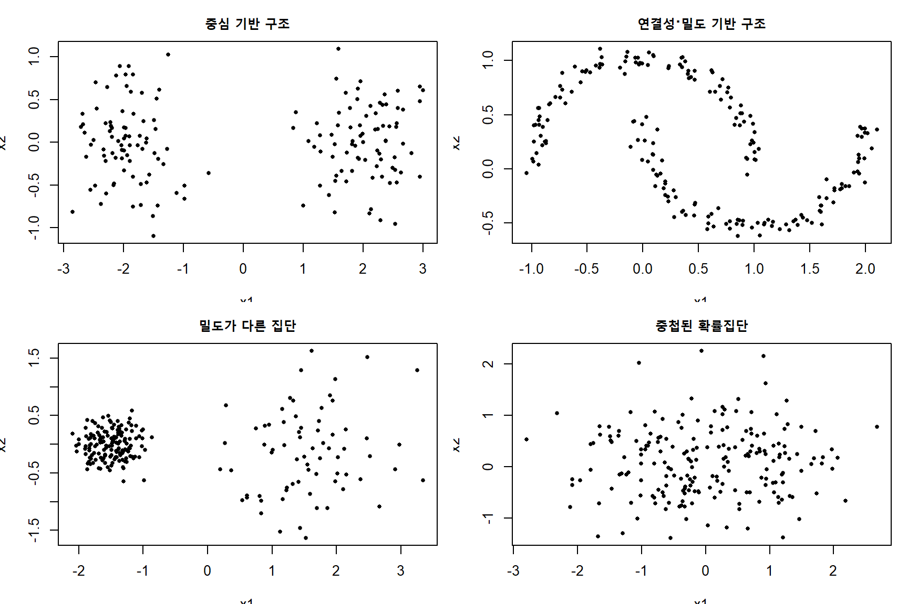
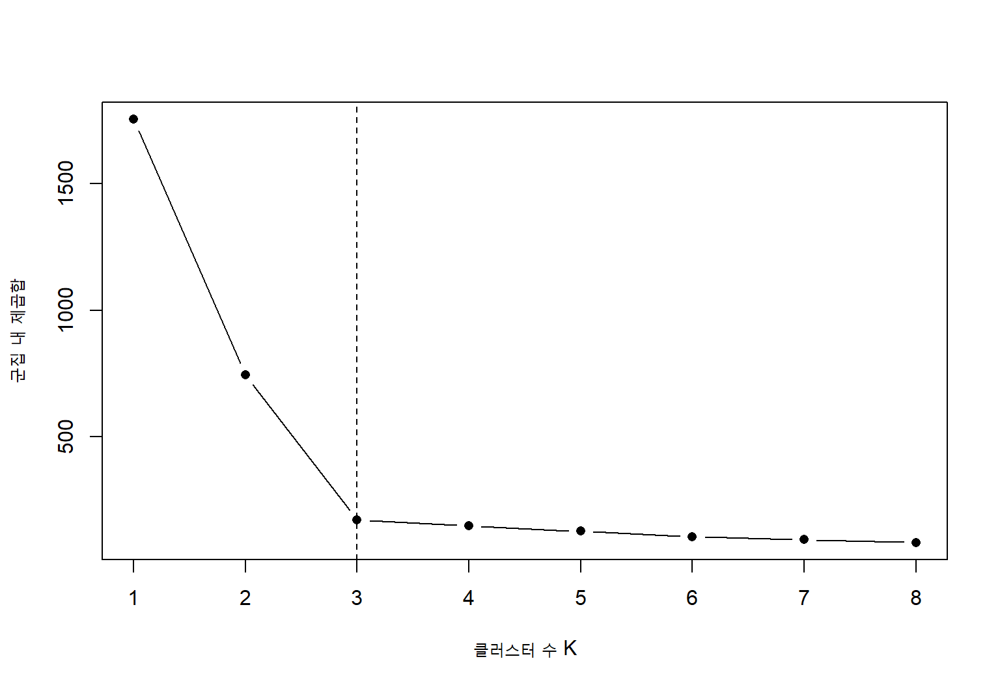
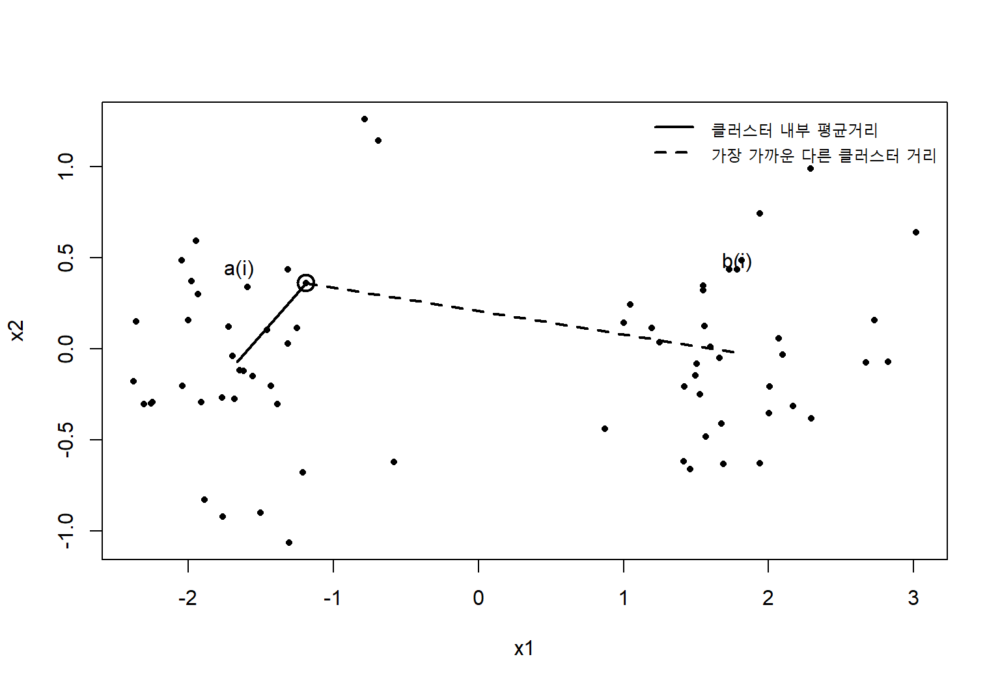
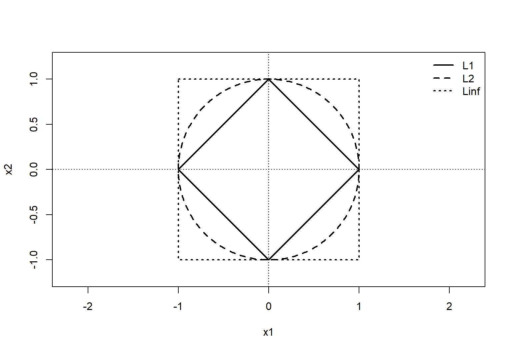
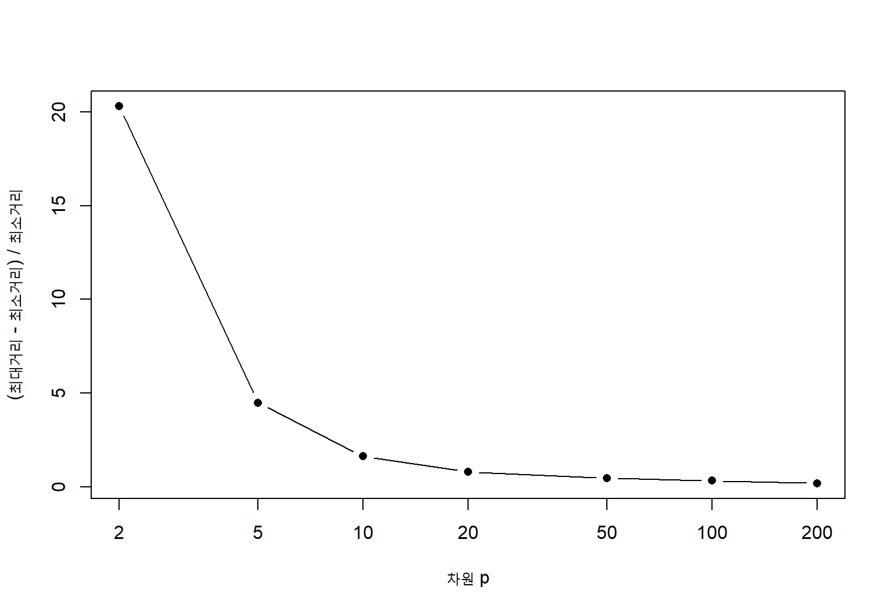
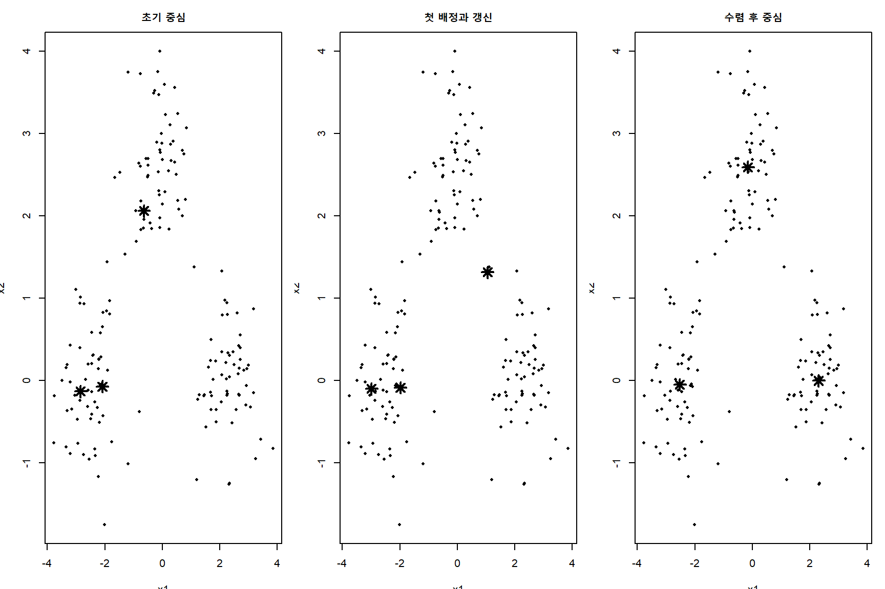
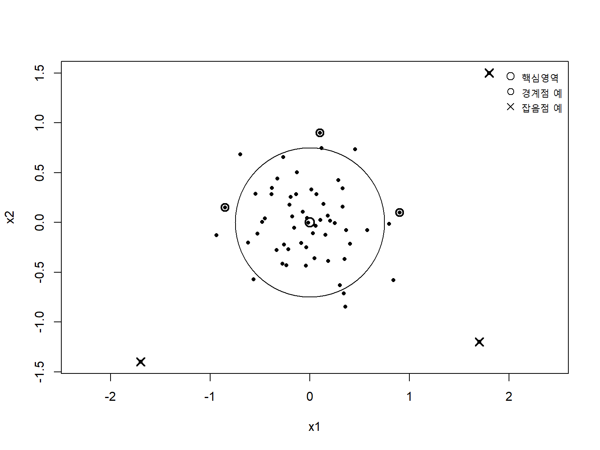
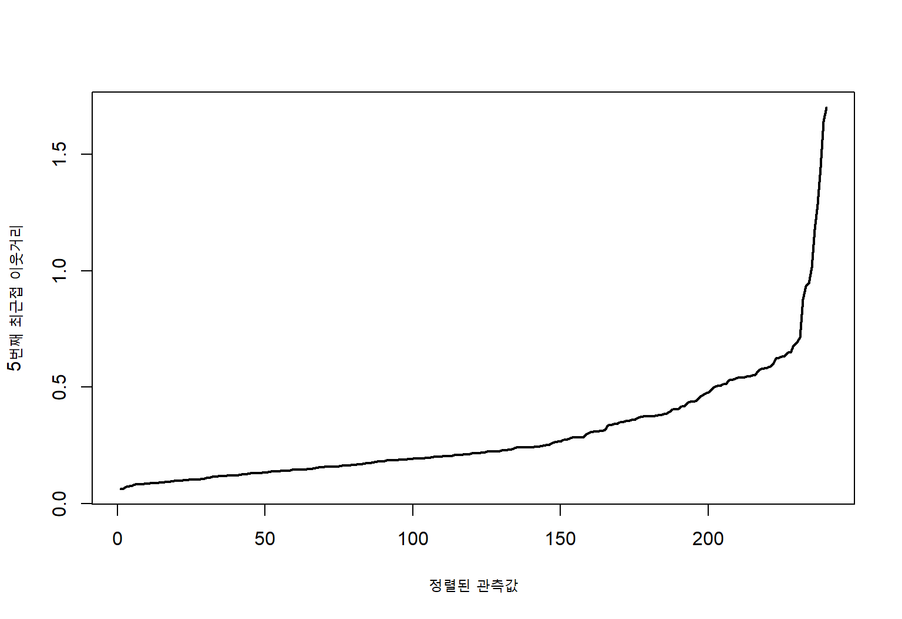
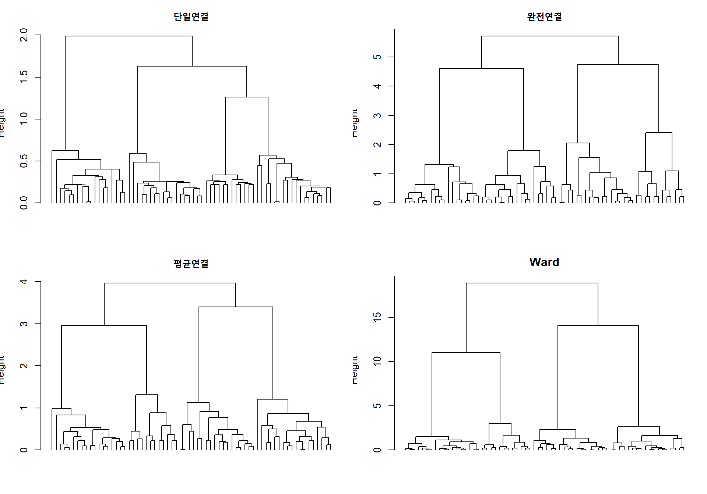

9 클러스터링
클러스터링(clustering)은 목표변수나 정답 레이블이 주어지지 않은 자료에서 관측값들 사이의 유사성과 차이를 이용하여 내부 구조를 발견하는 비지도학습(unsupervised learning) 방법이다. 지도학습에서는 입력변수와 목표변수 사이의 관계를 학습하지만, 클러스터링에서는 관측값들이 어떤 방식으로 묶이는지 자체를 자료로부터 추론한다. 따라서 클러스터링의 결과는 자료에 이미 존재하는 절대적 정답이라기보다, 사용한 표현, 거리, 알고리즘과 해석 목적에 의해 결정되는 하나의 구조적 요약으로 이해해야 한다.
\(n\)개의 관측값과 \(p\)개의 특성으로 이루어진 자료를
\[ \mathcal D = \{\mathbf x_1,\ldots,\mathbf x_n\}, \qquad \mathbf x_i\in\mathbb R^p \tag{9.1}\]
라고 하자. 가장 전형적인 클러스터링 문제는 관측값 집합을 \(K\)개의 서로 겹치지 않는 부분집합으로 나누는 것이다.
\[ \mathcal C = \{C_1,\ldots,C_K\}, \qquad C_k\cap C_\ell=\varnothing\;(k\neq \ell), \qquad \bigcup_{k=1}^{K}C_k=\{1,\ldots,n\} \tag{9.2}\]
이때 \(C_k\)는 \(k\)번째 클러스터에 포함된 관측값의 인덱스 집합이다. 관측값 \(i\)의 클러스터 소속을 나타내는 지시변수는
\[ z_{ik} = \begin{cases} 1, & i\in C_k,\\ 0, & i\notin C_k \end{cases}, \qquad \sum_{k=1}^{K}z_{ik}=1 \tag{9.3}\]
로 표현할 수 있다.
그러나 모든 클러스터링이 방정식 9.2과 같은 경성 분할(hard partition)을 만드는 것은 아니다. 하나의 관측값이 여러 클러스터에 부분적으로 속할 수 있는 퍼지 클러스터링, 관측값의 소속확률을 추정하는 혼합모형, 일부 관측값을 잡음으로 분류하는 밀도 기반 방법, 여러 해상도의 중첩 구조를 나타내는 계층적 클러스터링도 있다.
중요클러스터링의 핵심 관점
클러스터는 자료 안에 고정되어 있는 물체라기보다, 어떤 특성을 사용하고, 어떻게 스케일을 조정하고, 어떤 유사성 개념과 알고리즘을 적용하는가에 따라 달라지는 분석적 구성물이다. 따라서 클러스터링에서는 알고리즘 선택만큼 문제 정의와 결과 검증이 중요하다.
이 장에서는 클러스터링 학습 문제의 성격을 먼저 정리한 다음, 클러스터링 결과를 평가하는 방법, 거리와 유사도, 프로토타입 기반 클러스터링, 밀도 기반 클러스터링과 계층적 클러스터링을 차례로 설명한다.
9.1 클러스터링 학습 문제
9.1.1 지도학습과 클러스터링의 차이
지도학습에서는 관측값마다 목표값 \(y_i\)가 주어지며, 학습의 목적은 새로운 입력 \(\mathbf x\)에 대해 \(y\)를 예측하는 함수 \(f\)를 찾는 것이다. 이에 비해 클러스터링에서는 목표값이 없으므로 무엇이 좋은 결과인지 직접 정의해야 한다.
지도학습의 경험위험은 일반적으로
\[ \widehat R_n(f) = \frac{1}{n} \sum_{i=1}^{n} L\{y_i,f(\mathbf x_i)\} \tag{9.4}\]
와 같이 정답 \(y_i\)에 대한 손실로 정의된다. 그러나 클러스터링에서는 \(y_i\)가 없으므로 다음과 같은 대체 기준을 사용한다.
- 클러스터 내부의 관측값은 서로 가까워야 한다.
- 서로 다른 클러스터의 관측값은 충분히 멀어야 한다.
- 자료의 국소적 밀도나 연결성이 클러스터 안에서 유지되어야 한다.
- 작은 자료 변화에도 결과가 크게 달라지지 않아야 한다.
- 분석 목적과 영역 지식에 비추어 해석 가능한 구조여야 한다.
이러한 기준들은 서로 완전히 일치하지 않는다. 구형의 조밀한 집단을 선호하는 기준은 길게 휘어진 군집이나 밀도가 다른 군집을 제대로 찾지 못할 수 있다. 따라서 클러스터링 알고리즘은 특정한 클러스터 개념을 암묵적으로 전제한다.
9.1.2 클러스터의 여러 개념
클러스터를 정의하는 대표적인 관점은 다음과 같다.
중심 기반 클러스터
각 클러스터는 하나의 대표점 또는 중심으로 요약되고, 관측값은 가장 가까운 중심에 배정된다. \(k\)-평균이 대표적이다. 중심 기반 클러스터(center-based cluster)는 대체로 볼록하고 구형에 가까운 집단을 잘 표현한다.
연결성 기반 클러스터(connectivity-based cluster)
서로 가까운 관측값들을 연쇄적으로 연결하여 클러스터를 구성한다. 계층적 군집화의 단일연결법이 대표적이다. 길게 늘어난 구조를 찾을 수 있지만, 잡음에 의해 서로 다른 집단이 연결되는 연쇄효과(chaining effect)가 발생할 수 있다.
밀도 기반 클러스터(density-based cluster)
고밀도 영역은 같은 클러스터로 보고, 저밀도 영역을 클러스터의 경계로 본다. DBSCAN은 임의의 모양을 가진 클러스터를 찾고 잡음을 별도로 분리할 수 있다.
분포 기반 클러스터(distribution-based cluster)
자료가 여러 확률분포의 혼합에서 생성되었다고 가정한다. 가우시안 혼합모형(Gaussian mixture model)에서는 각 혼합성분이 하나의 잠재집단을 나타낸다. 이 관점에서는 클러스터 소속을 확률로 표현할 수 있다.
개념 또는 목적 기반 클러스터
통계적 거리뿐 아니라 영역 지식, 규칙, 제약조건 또는 실제 의사결정 목적에 따라 클러스터를 정의한다. 예를 들어 의료자료에서는 치료전략이 달라지는 환자군이 의미 있는 클러스터일 수 있다.
그림 9.1는 클러스터가 하나의 기하학적 형태로만 정의될 수 없음을 보여준다. 첫 번째 자료에는 중심 기반 방법이 적합하지만, 두 번째 자료에서는 연결성 또는 밀도 기반 방법이 더 자연스럽다. 세 번째와 네 번째 자료에서는 밀도 차이와 중첩을 고려해야 한다.
9.1.3 경성, 연성 및 중첩 클러스터링
경성 클러스터링(hard clustering)에서는 각 관측값이 정확히 하나의 클러스터에 속한다. 연성 클러스터링(soft clustering)에서는 소속 정도를
\[ u_{ik}\in[0,1], \qquad \sum_{k=1}^{K}\nu_{ik}=1 \tag{9.5}\]
로 표현한다. \(\nu_{ik}\)는 클러스터 소속도(membership), 즉 퍼지 소속도 또는 사후 소속확률이 될 수 있다. 클러스터 사이에 명확한 경계가 없거나 여러 특성이 혼합된 관측값이 존재할 때 연성 클러스터링이 유용하다.
중첩 클러스터링(overlapping clustering)에서는 하나의 관측값이 여러 클러스터에 동시에 속할 수 있으며, 반드시 소속도의 합이 1일 필요는 없다. 예를 들어 한 문서는 여러 주제를 동시에 포함할 수 있고, 한 유전자는 여러 생물학적 경로에 참여할 수 있다.
9.1.4 분할, 계층과 그래프 구조
클러스터링 결과의 표현 형식도 다양하다.
- 분할형 구조: \(K\)개의 서로 겹치지 않는 클러스터를 생성한다.
- 계층형 구조: 작은 클러스터가 큰 클러스터 안에 포함되는 중첩 구조를 생성한다.
- 그래프 구조: 관측값을 정점, 유사성을 간선으로 표현하고 커뮤니티를 탐색한다.
- 확률적 구조: 잠재 클래스 또는 혼합성분의 사후확률을 추정한다.
같은 자료라도 분할형 알고리즘은 하나의 해상도만 제공하지만, 계층적 방법은 여러 수준에서 가능한 구조를 보여준다.
9.1.5 목적함수와 귀납적 편향
대부분의 클러스터링 방법은 명시적 또는 암묵적인 목적함수를 최적화한다. 일반적인 형태는
\[ \widehat{\mathcal C} = \arg\min_{\mathcal C\in\mathfrak C} \left \{ W(\mathcal C) + \lambda P(\mathcal C) \right\} \tag{9.6}\]
이다. 여기서 \(W(\mathcal C)\)는 클러스터 내부의 비동질성을 측정하고, \(P(\mathcal C)\)는 클러스터 수, 불균형, 복잡한 경계 또는 제약 위반에 대한 패널티다. \(\mathfrak C\)는 허용되는 클러스터링의 집합이다.
노트목적함수의 의미
방정식 9.6의 마지막 줄에 나타나는 목적함수는 개념적 표현이다. 실제 알고리즘마다 \(W\), \(P\)와 허용공간 \(\mathfrak C\)의 정의가 다르며, 일부 방법은 명시적인 전역 목적함수를 갖지 않는다.
클러스터링 방법의 귀납적 편향은 다음 요소에서 나타난다.
- 거리 또는 유사도의 정의
- 클러스터 모양에 대한 가정
- 클러스터 수의 선택
- 잡음과 이상치의 처리
- 클러스터 크기와 밀도에 대한 가정
- 변수의 스케일과 가중치
- 초기값과 탐색 알고리즘
9.1.6 전처리와 표현의 영향
클러스터링은 거리와 유사도에 크게 의존하므로 변수의 단위와 표현에 민감하다. 두 변수 \(x_1\)과 \(x_2\)의 단위가 크게 다르면 유클리드 거리(Euclidean distance)에서 변동 폭이 큰 변수가 결과를 지배한다. 표준화는
\[ \widetilde x_{ij} = \frac{x_{ij}-\overline x_j}{s_j} \tag{9.7}\]
와 같이 수행할 수 있다. 여기서 \(\overline x_j\)와 \(s_j\)는 \(j\)번째 변수의 표본평균과 표본표준편차다.
다만 모든 변수를 자동으로 표준화하는 것이 항상 옳지는 않다. 단위 자체가 중요하거나 변동이 큰 변수가 실제로 더 중요한 경우에는 표준화가 정보를 왜곡할 수 있다. 로그변환, 순위변환, 범주형 인코딩, 이상치 완화와 결측값 처리는 클러스터링 전에 분석 목적에 맞게 결정해야 한다.
9.1.7 클러스터 수의 문제
많은 알고리즘은 클러스터 수 \(K\)를 미리 지정해야 한다. 그러나 실제 자료에서 하나의 참된 \(K\)가 존재하지 않을 수 있다. 해상도에 따라 큰 집단 안에 작은 하위집단이 존재할 수 있고, 연속적인 스펙트럼을 억지로 나누면 임의적인 경계가 만들어진다.
클러스터 수 선택에는 다음 정보를 함께 사용한다.
- 내부 타당도 지수
- 외부 정보 또는 영역 지식
- 재표본화 안정성
- 시각화
- 후속 분석에서의 유용성
- 클러스터 해석 가능성
9.1.8 고차원 자료와 차원의 저주
차원이 증가하면 관측값 사이의 거리가 비슷해지는 거리 집중(distance concentration) 현상이 나타난다. 또한 관련 없는 변수가 많으면 실제 군집 구조가 잡음에 묻힌다.
고차원 클러스터링에서는 다음 전략을 고려할 수 있다.
- 변수 선택
- 주성분 분석이나 임베딩을 통한 차원 축소
- 희소 클러스터링
- 부분공간 클러스터링
- 변수 가중 거리
- 도메인 지식을 이용한 특성 구성
다만 차원 축소 후의 클러스터가 원래 변수공간에서도 의미가 있는지 확인해야 한다. 시각화를 위해 2차원으로 축소한 결과와 실제 클러스터링에 사용할 표현을 구분하는 것이 중요하다.
9.1.9 클러스터링 분석의 기본 절차
클러스터링 분석은 다음 순서로 진행하는 것이 바람직하다.
- 분석 목적과 클러스터의 의미를 정의한다.
- 분석단위와 사용할 변수를 결정한다.
- 결측값, 이상치, 단위와 분포를 점검한다.
- 자료의 특성에 맞는 거리 또는 유사도를 선택한다.
- 여러 클러스터링 방법과 하이퍼파라미터를 비교한다.
- 내부 타당도, 외부 정보와 안정성을 함께 평가한다.
- 클러스터별 특성을 요약하고 해석한다.
- 독립자료나 새로운 시점에서 재현성을 확인한다.
- 클러스터를 실제 의사결정에 사용할 경우 배정규칙을 명시한다.
노트탐색과 확증의 구분
클러스터링으로 집단을 발견한 뒤 동일한 자료에서 집단 간 차이를 검정하면 선택과 검정이 같은 자료에 의존한다. 이 경우 보통의 \(p\)값은 선택 불확실성을 반영하지 못한다. 가능하면 별도의 자료에서 클러스터 특성을 확인하거나, 클러스터링 자체를 탐색적 분석으로 명시해야 한다.
9.2 성능 척도
9.2.1 클러스터링 평가의 어려움
클러스터링에서는 정답 레이블이 없는 경우가 많으므로 단일한 성능척도로 알고리즘의 우수성을 판단하기 어렵다. 평가기준은 크게 네 종류로 나눌 수 있다.
| 평가 유형 | 사용 정보 | 대표 척도 | 주요 목적 |
|---|---|---|---|
| 내부 평가(internal validation) | 자료와 군집결과 | 실루엣, Calinski-Harabasz, Davies-Bouldin | 응집도와 분리도 평가 |
| 외부 평가(external validation) | 외부 정답 또는 기준분류 | ARI, NMI, purity | 알려진 분류와 일치도 평가 |
| 상대 평가(relative validation) | 여러 \(K\) 또는 알고리즘 | elbow, gap statistic | 대안 간 비교 |
| 안정성 평가(stability validation) | 재표본화 또는 교란자료 | Jaccard, consensus | 결과의 재현성 평가 |
좋은 클러스터링은 대체로 클러스터 내부가 동질적이고 클러스터 사이가 잘 분리되어야 한다. 그러나 길게 휘어진 클러스터, 밀도가 다른 클러스터 또는 중첩된 확률집단에서는 단순한 응집도와 분리도 기준이 적절하지 않을 수 있다.
9.2.2 외부 평가를 위한 분할표
외부 기준 레이블 \(Y\in\{1,\ldots,G\}\)와 클러스터 결과 \(Z\in\{1,\ldots,K\}\)가 있다고 하자. 두 분할의 교차표를
\[ N=(n_{gk}), \qquad n_{gk} = \#\{i:Y_i=g, Z_i=k\} \tag{9.8}\]
로 정의한다. 행합과 열합은
\[ n_{g\cdot}=\sum_{k=1}^{K}n_{gk}, \qquad n_{\cdot k}=\sum_{g=1}^{G}n_{gk} \tag{9.9}\]
이다. 클러스터 번호는 임의적이므로 단순 정확도를 계산하기 전에 클러스터와 외부 클래스의 대응을 맞추어야 한다.
9.2.3 순도
순도(purity)는 각 클러스터에서 가장 많은 외부 클래스의 관측값 수를 합하여 계산한다.
\[ \operatorname{Purity} = \frac{1}{n} \sum_{k=1}^{K} \max_g n_{gk} \tag{9.10}\]
순도는 0과 1 사이이며 값이 클수록 외부 클래스와 잘 일치한다. 그러나 \(K\)를 크게 하면 각 관측값을 별도 클러스터로 만들 수 있어 순도가 1에 가까워진다. 따라서 서로 다른 클러스터 수를 비교하는 데 단독으로 사용해서는 안 된다.
9.2.4 Rand 지수와 조정 Rand 지수
두 관측값의 모든 쌍을 고려하자. 두 분할에서 모두 같은 집단에 속한 쌍의 수를 \(a\), 두 분할에서 모두 다른 집단에 속한 쌍의 수를 \(b\), 한 분할에서만 같은 집단에 속한 쌍의 수를 \(c+d\)라고 하면 Rand 지수는
\[ \operatorname{RI} = \frac{a+b}{a+b+c+d} \tag{9.11}\]
이다. RI는 우연에 의한 일치도를 보정하지 않는다. 조정 Rand 지수(adjusted Rand index, ARI)는 기대 일치도를 보정한다.
\[ \operatorname{ARI} = \frac{ \displaystyle \sum_{g,k}{n_{gk}\choose 2} - \frac{ \displaystyle \sum_g{n_{g\cdot}\choose 2} \sum_k{n_{\cdot k}\choose 2} }{{n\choose 2}} }{ \displaystyle \frac{1}{2} \left[ \sum_g{n_{g\cdot}\choose 2} + \sum_k{n_{\cdot k}\choose 2} \right] - \frac{ \displaystyle \sum_g{n_{g\cdot}\choose 2} \sum_k{n_{\cdot k}\choose 2} }{{n\choose 2}} } \tag{9.12}\]
ARI는 완전한 일치에서 1이고, 무작위 분할의 기대값은 0이다. 음수도 가능하며 이는 우연보다 일치도가 낮음을 의미한다.
9.2.5 상호정보량과 정규화 상호정보량
외부 클래스 \(Y\)와 클러스터 \(Z\)의 상호정보량은
\[ I(Y;Z) = \sum_{g=1}^{G} \sum_{k=1}^{K} \frac{n_{gk}}{n} \log \left( \frac{n\,n_{gk}}{n_{g\cdot}n_{\cdot k}} \right) \tag{9.13}\]
이다. 엔트로피를
\[ H(Y) = - \sum_{g=1}^{G} \frac{n_{g\cdot}}{n} \log \left( \frac{n_{g\cdot}}{n} \right) \tag{9.14}\]
로 정의하면 정규화 상호정보량(normalized mutual information, NMI)의 한 형태는
\[ \operatorname{NMI} = \frac{I(Y;Z)}{\sqrt{H(Y)H(Z)}} \tag{9.15}\]
이다. NMI는 클래스와 클러스터 사이의 정보 공유 정도를 측정하며 0과 1 사이의 값을 갖는다.
9.2.6 클러스터 내 제곱합과 전체 변동
유클리드 자료에서 전체 평균을 \(\overline{\mathbf x}\), 클러스터 \(k\)의 평균을 \(\boldsymbol\mu_k\)라고 하자. 전체 제곱합은
\[ \operatorname{TSS} = \sum_{i=1}^{n} \|\mathbf x_i-\overline{\mathbf x}\|_2^2 \tag{9.16}\]
이고, 클러스터 내 제곱합(within-cluster sum of squares)은
\[ \operatorname{WSS} = \sum_{k=1}^{K} \sum_{i\in C_k} \|\mathbf x_i-\boldsymbol\mu_k\|_2^2 \tag{9.17}\]
이다. 클러스터 간 제곱합은
\[ \operatorname{BSS} = \sum_{k=1}^{K} |C_k| \|\boldsymbol\mu_k-\overline{\mathbf x}\|_2^2 \tag{9.18}\]
이며 다음 분해가 성립한다.
\[ \operatorname{TSS} = \operatorname{WSS} + \operatorname{BSS} \tag{9.19}\]
\(K\)가 증가하면 WSS는 단조 감소하므로 WSS 자체만으로 \(K\)를 선택할 수 없다. 감소 폭이 급격히 작아지는 지점을 찾는 elbow 방법이 자주 사용된다.

그림 9.2에서는 \(K=3\)까지 WSS가 크게 감소하고 이후 감소폭이 완만해진다. 그러나 elbow가 항상 뚜렷하게 나타나는 것은 아니며, 시각적 판단에 주관성이 개입된다.
9.2.7 실루엣 계수
관측값 \(i\)가 속한 클러스터 내부의 평균거리를
\[ a(i) = \frac{1}{|C_{z_i}|-1} \sum_{j\in C_{z_i},\,j\neq i} d(i,j) \tag{9.20}\]
라고 하자. 다른 클러스터 \(C_k\)까지의 평균거리는
\[ d(i,C_k) = \frac{1}{|C_k|} \sum_{j\in C_k}d(i,j) \tag{9.21}\]
이고, 그중 가장 작은 값을
\[ b(i) = \min_{k\neq z_i}d(i,C_k) \tag{9.22}\]
로 정의한다. 관측값 \(i\)의 실루엣 계수(silhouette coefficient)는
\[ s(i) = \frac{b(i)-a(i)}{\max\{a(i),b(i)\}} \tag{9.23}\]
이다. \(s(i)\)는 \(-1\)과 1 사이의 값을 갖는다.
- 1에 가까움: 현재 클러스터에 잘 속하고 다른 클러스터와 잘 분리됨
- 0에 가까움: 클러스터 경계에 위치함
- 음수: 다른 클러스터에 더 가까울 가능성이 있음
전체 평균 실루엣은
\[ \overline s = \frac{1}{n} \sum_{i=1}^{n}s(i) \tag{9.24}\]
로 계산한다.

9.2.8 Calinski-Harabasz 지수
Calinski-Harabasz 지수는 클러스터 간 분산과 클러스터 내 분산의 비를 자유도로 보정한다.
\[ \operatorname{CH}(K) = \frac{\operatorname{BSS}/(K-1)} {\operatorname{WSS}/(n-K)} \tag{9.25}\]
값이 클수록 클러스터가 잘 분리되어 있다고 판단한다. 이 지수는 유클리드 공간과 구형 클러스터에 특히 자연스럽다.
9.2.9 Dunn 지수
클러스터 사이 최소거리와 클러스터 내부 최대직경의 비로 Dunn 지수를 정의할 수 있다.
\[ D = \frac{ \displaystyle \min_{k\neq\ell}\delta(C_k,C_\ell) }{ \displaystyle \max_k\Delta(C_k) } \tag{9.26}\]
여기서 \(\delta(C_k,C_\ell)\)는 두 클러스터 사이 거리, \(\Delta(C_k)\)는 클러스터의 직경이다. 값이 클수록 분리도는 높고 내부 응집도는 좋다. 그러나 극단적인 관측값에 민감하다.
9.2.10 Davies-Bouldin 지수
클러스터 \(k\)의 평균 산포를
\[ S_k = \frac{1}{|C_k|} \sum_{i\in C_k} d(\mathbf x_i,\boldsymbol\mu_k) \tag{9.27}\]
라고 하자. 두 클러스터의 유사도를
\[ R_{k\ell} = \frac{S_k+S_\ell} {d(\boldsymbol\mu_k,\boldsymbol\mu_\ell)} \tag{9.28}\]
로 정의하면 Davies-Bouldin 지수는
\[ \operatorname{DB} = \frac{1}{K} \sum_{k=1}^{K} \max_{\ell\neq k}R_{k\ell} \tag{9.29}\]
이다. 값이 작을수록 군집 내 산포에 비해 군집 간 거리가 크다.
9.2.11 Gap 통계량
Gap 통계량은 관측자료의 WSS와 군집구조가 없는 기준분포에서 기대되는 WSS를 비교한다. \(K\)개 클러스터의 로그 군집 내 산포를 \(\log W_K\)라고 하면
\[ \operatorname{Gap}(K) = E^*\{\log W_K^*\} - \log W_K \tag{9.30}\]
이다. \(E^*\)는 기준분포에서의 기대값이다. 일반적인 선택규칙은 다음을 만족하는 가장 작은 \(K\)를 선택하는 것이다.
\[ \operatorname{Gap}(K) \geq \operatorname{Gap}(K+1)-s_{K+1} \tag{9.31}\]
여기서 \(s_{K+1}\)은 몬테카를로 표준오차를 보정한 값이다. Gap 통계량은 기준분포의 설정에 민감하므로 자료의 지지영역과 분포를 고려해야 한다.
9.2.12 안정성 평가
안정성은 자료를 조금 바꾸어도 비슷한 클러스터가 재현되는지를 평가한다. 원자료에서 얻은 클러스터 \(C_k\)와 재표본에서 가장 잘 대응되는 클러스터 \(C_k^{(b)}\)의 Jaccard 유사도는
\[ J(C_k,C_k^{(b)}) = \frac{|C_k\cap C_k^{(b)}|} {|C_k\cup C_k^{(b)}|} \tag{9.32}\]
이다. 여러 재표본에서 평균을 계산하면 클러스터별 안정도를 얻을 수 있다.
공동소속행렬(consensus matrix)은 관측값 쌍 \((i,j)\)가 반복분석에서 같은 클러스터에 속한 비율로 정의된다.
\[ M_{ij} = \frac{ \displaystyle \sum_{b=1}^{B} I\{z_i^{(b)}=z_j^{(b)}\} I\{i,j\text{ 모두 표본 }b\text{에 포함}\} }{ \displaystyle \sum_{b=1}^{B} I\{i,j\text{ 모두 표본 }b\text{에 포함}\} } \tag{9.33}\]
\(M_{ij}\)가 1에 가까우면 두 관측값은 반복적으로 같은 클러스터에 속한다. 안정성이 높더라도 해석적으로 의미 없는 분할일 수 있고, 반대로 연속적인 구조를 강제로 나누면 안정성이 낮을 수 있다.
9.2.13 평가척도의 종합
클러스터링 결과를 선택할 때 하나의 지수만 최대화하는 것은 위험하다. 다음 기준을 함께 고려해야 한다.
- 내부 응집도와 분리도
- 재표본화 안정성
- 영역 지식과의 일관성
- 클러스터 크기의 현실성
- 후속 분석이나 의사결정에서의 유용성
- 새로운 자료에서의 재현성
- 알고리즘과 하이퍼파라미터 변화에 대한 민감도
경고정답 레이블의 해석
외부 레이블이 존재하더라도 그것이 클러스터링의 유일한 정답은 아닐 수 있다. 예를 들어 진단명으로 평가한 클러스터가 치료반응이나 예후 측면에서는 다른 구조를 보일 수 있다. 외부 평가척도는 분석 목적에 맞는 기준 레이블을 사용할 때 의미가 있다.
9.3 거리 계산법
9.3.1 거리와 유사도
두 관측값 \(\mathbf x_i\)와 \(\mathbf x_j\)의 거리 \(d(\mathbf x_i,\mathbf x_j)\)는 차이를 수치화한다. 수학적 거리(metric)는 다음 조건을 만족한다.
- 비음성: \(d(\mathbf x_i,\mathbf x_j)\geq0\)
- 동일성: \(d(\mathbf x_i,\mathbf x_j)=0\)이면 \(\mathbf x_i=\mathbf x_j\)
- 대칭성: \(d(\mathbf x_i,\mathbf x_j)=d(\mathbf x_j,\mathbf x_i)\)
- 삼각부등식: \(d(\mathbf x_i,\mathbf x_k)\leq d(\mathbf x_i,\mathbf x_j)+d(\mathbf x_j,\mathbf x_k)\)
모든 비유사도(dissimilarity)가 이 조건을 만족하는 것은 아니다. 클러스터링 알고리즘에 따라 삼각부등식이 필수적이지 않을 수 있지만, 거리의 성질은 알고리즘의 해석과 계산에 영향을 준다.
유사도 \(s(i,j)\)는 두 관측값이 얼마나 비슷한지를 나타내며 값이 클수록 유사하다. 유사도와 거리는 상황에 따라
\[ d(i,j)=1-s(i,j) \tag{9.34}\]
처럼 변환할 수 있지만, 변환된 값이 항상 수학적 거리를 이루는 것은 아니다.
9.3.2 민코프스키 거리
민코프스키 거리(Minkowski distance)는
\[ d_q(\mathbf x_i,\mathbf x_j) = \left( \sum_{r=1}^{p} |x_{ir}-x_{jr}|^q \right)^{1/q}, \qquad q\geq1 \tag{9.35}\]
로 정의한다.
- \(q=1\): 맨해튼 거리
- \(q=2\): 유클리드 거리
- \(q\rightarrow\infty\): 체비쇼프 거리
유클리드 거리는 큰 차이에 더 큰 가중을 주며 구형의 등거리선을 만든다. 맨해튼 거리(Manhattan distance)는 절댓값 차이를 합하고 이상치의 영향이 상대적으로 작다. 체비쇼프 거리는 가장 큰 단일 변수 차이에 의해 결정된다.

그림 9.4에서 같은 거리 1을 갖는 점의 집합은 거리 정의에 따라 다른 모양을 갖는다. 이 기하학적 차이는 클러스터 경계와 최근접 이웃관계에 영향을 준다.
9.3.3 가중 거리와 표준화 거리
변수마다 중요도가 다르면 가중 민코프스키 거리를 사용할 수 있다.
\[ d_q^{(w)}(\mathbf x_i,\mathbf x_j) = \left( \sum_{r=1}^{p} w_r|x_{ir}-x_{jr}|^q \right)^{1/q}, \qquad w_r\geq0 \tag{9.36}\]
표준화 유클리드 거리는 각 변수 차이를 척도로 나눈다.
\[ d_{\mathrm{std}}(\mathbf x_i,\mathbf x_j) = \left[ \sum_{r=1}^{p} \frac{(x_{ir}-x_{jr})^2}{s_r^2} \right]^{1/2} \tag{9.37}\]
이는 각 변수의 분산이 서로 다를 때 유용하지만, 변수 간 상관은 반영하지 않는다.
9.3.4 마할라노비스 거리
공분산행렬을 \(\boldsymbol\Sigma\)라고 하면 마할라노비스 거리(Mahalanobis distance)는
\[ d_M(\mathbf x_i,\mathbf x_j) = \left[ (\mathbf x_i-\mathbf x_j)^\top \boldsymbol\Sigma^{-1} (\mathbf x_i-\mathbf x_j) \right]^{1/2} \tag{9.38}\]
이다. 변수들의 스케일과 상관을 함께 보정한다. 동일한 마할라노비스 거리를 갖는 점들은 원자료 공간에서 타원형을 이룬다.
고차원에서 \(p\)가 \(n\)에 가깝거나 더 크면 표본 공분산행렬이 불안정하거나 역행렬이 존재하지 않을 수 있다. 이 경우 축소 공분산, 대각 공분산, 저차원 표현 또는 규제된 역행렬을 사용해야 한다.
9.3.5 코사인 거리와 상관 거리
코사인 유사도(cosine similarity)는 두 벡터 사이의 각도를 측정한다.
\[ s_{\cos}(\mathbf x_i,\mathbf x_j) = \frac{\mathbf x_i^\top\mathbf x_j} {\|\mathbf x_i\|_2\|\mathbf x_j\|_2} \tag{9.39}\]
코사인 거리는 흔히
\[ d_{\cos}(\mathbf x_i,\mathbf x_j) = 1-s_{\cos}(\mathbf x_i,\mathbf x_j) \tag{9.40}\]
로 정의한다. 문서-단어 자료처럼 벡터의 크기보다 방향이 중요한 경우에 적합하다.
상관 거리(correlation distance)는 각 벡터에서 평균을 제거한 뒤 코사인 거리를 계산한 것과 같다.
\[ d_{\mathrm{cor}}(\mathbf x_i,\mathbf x_j) = 1-\operatorname{cor}(\mathbf x_i,\mathbf x_j) \tag{9.41}\]
유전자 발현자료에서는 절대 발현량보다 패턴의 유사성이 중요할 수 있어 상관 거리가 자주 사용된다. 음의 상관을 매우 다르다고 볼지, 반대 패턴으로서 의미 있게 볼지는 연구목적에 따라 달라진다.
9.3.6 이진 자료의 거리
두 이진 벡터에서 다음 빈도를 정의하자.
- \(a\): 두 벡터가 모두 1인 변수 수
- \(b\): 첫 번째만 1인 변수 수
- \(c\): 두 번째만 1인 변수 수
- \(d\): 두 벡터가 모두 0인 변수 수
단순 일치계수는
\[ s_{\mathrm{SMC}} = \frac{a+d}{a+b+c+d} \tag{9.42}\]
이고, Jaccard 유사도는 공동 부재 \(d\)를 제외하여
\[ s_J = \frac{a}{a+b+c} \tag{9.43}\]
로 정의한다. 희귀한 사건의 존재가 중요하고 0-0 일치가 정보가 적을 때 Jaccard 유사도가 적합하다. 반면 0과 1이 대칭적인 상태라면 단순 일치계수가 자연스럽다.
Hamming 거리는 서로 다른 위치의 수를 계산한다.
\[ d_H(\mathbf x_i,\mathbf x_j) = \sum_{r=1}^{p}I(x_{ir}\neq x_{jr}) \tag{9.44}\]
9.3.7 범주형 및 혼합형 자료
명목형 변수는 일치 여부로 거리성분을 정의할 수 있고, 순서형 변수는 순위를 \([0,1]\) 구간으로 변환하여 수치형처럼 처리할 수 있다. Gower 비유사도는 변수별 비유사도를 같은 범위로 표준화한 뒤 평균한다.
\[ d_G(i,j) = \frac{ \displaystyle \sum_{r=1}^{p}w_{ijr}\delta_{ijr} }{ \displaystyle \sum_{r=1}^{p}w_{ijr} } \tag{9.45}\]
여기서 \(\delta_{ijr}\in[0,1]\)은 변수 \(r\)에서 두 관측값의 비유사도이고, \(w_{ijr}\)은 해당 변수의 비교 가능 여부를 나타낸다. 수치형 변수에서는 보통 범위로 나눈 절대차를 사용한다.
\[ \delta_{ijr} = \frac{|x_{ir}-x_{jr}|} {\max_h x_{hr}-\min_h x_{hr}} \tag{9.46}\]
Gower 거리는 수치형, 이진형, 명목형과 순서형 변수가 혼합된 자료에 유용하다.
9.3.8 결측값이 있는 거리
관측값 쌍마다 함께 관측된 변수만 사용하면
\[ d_{ij} = \left[ \frac{p}{|O_{ij}|} \sum_{r\in O_{ij}} (x_{ir}-x_{jr})^2 \right]^{1/2} \tag{9.47}\]
처럼 정의할 수 있다. \(O_{ij}\)는 두 관측값에서 모두 관측된 변수 집합이다. \(p/|O_{ij}|\)는 비교 가능한 변수가 적을 때 거리를 보정한다.
그러나 관측값 쌍마다 다른 변수집합을 사용하면 거리의 비교 가능성과 삼각부등식이 깨질 수 있다. 결측기전이 체계적이면 단순한 쌍별 계산이 편향될 수 있으므로 다중대치, 모형기반 거리 또는 결측 자체를 정보로 사용하는 접근을 고려한다.
9.3.9 시계열과 순차자료의 거리
길이가 같고 시간축이 정렬된 시계열에는 유클리드 거리를 사용할 수 있지만, 위상 차이나 속도 차이가 있으면 유사한 패턴도 멀게 측정된다. 동적 시간 워핑(dynamic time warping, DTW)은 두 시계열의 시간 인덱스를 비선형적으로 정렬하여 누적비용을 최소화한다.
두 시계열 \(x_1,\ldots,x_T\)와 \(y_1,\ldots,y_S\)의 누적비용은 재귀적으로
\[ D(t,s) = |x_t-y_s| + \min\{D(t-1,s),D(t,s-1),D(t-1,s-1)\} \tag{9.48}\]
로 계산할 수 있다. 정렬 경로에 대한 제약이 없으면 과도한 왜곡이 발생할 수 있으므로 창 제약이나 패널티를 사용한다.
문자열이나 사건순서에는 편집거리, 최장공통부분수열, 최적정렬거리 등을 사용할 수 있다.
9.3.10 거리 집중 현상
고차원에서는 가장 가까운 이웃과 가장 먼 이웃의 거리가 상대적으로 비슷해진다. 거리 집중의 한 표현은
\[ \frac{d_{\max}-d_{\min}}{d_{\min}} \longrightarrow 0 \tag{9.49}\]
이다. 이 현상은 거리 기반 클러스터링의 분리력을 약화한다.

그림 9.5에서 차원이 커질수록 거리의 상대적 차이가 작아지는 경향을 확인할 수 있다. 실제 자료에서는 분포, 표본크기와 변수상관에 따라 정도가 달라진다.
9.3.11 거리 선택의 원칙
거리함수는 자료형과 분석목적에 맞추어 선택해야 한다.
| 자료 특성 | 고려할 거리 | 주요 주의점 |
|---|---|---|
| 연속형, 비슷한 단위 | 유클리드 | 이상치와 스케일에 민감 |
| 연속형, 상관 존재 | 마할라노비스 | 공분산 추정 안정성 필요 |
| 희소한 고차원 벡터 | 코사인 | 벡터 크기 정보가 제거됨 |
| 이진 희귀사건 | Jaccard | 공동 부재를 무시함 |
| 혼합형 자료 | Gower | 변수 가중치와 범위 설정 필요 |
| 순서·문자열 | 편집거리, DTW | 계산량과 정렬 제약 필요 |
| 이상치가 많음 | 맨해튼, 강건 거리 | 변수별 변환과 가중치 검토 |
거리 선택은 알고리즘 선택과 분리된 문제가 아니다. \(k\)-평균은 제곱 유클리드 거리와 평균 중심을 전제로 하고, \(k\)-메도이드는 임의의 비유사도 행렬을 사용할 수 있다. 계층적 군집화에서도 연결법에 따라 거리의 의미가 달라진다.
9.4 프로토타입 클러스터링
9.4.1 프로토타입의 개념
프로토타입(prototype) 기반 클러스터링은 각 클러스터를 하나의 대표점 또는 대표객체로 요약한다. 관측값은 가장 가까운 프로토타입에 배정된다. 프로토타입이 평균이면 중심(centroid), 실제 관측값이면 메도이드(medoid), 확률분포의 모수이면 분포적 프로토타입으로 볼 수 있다.
일반적인 목적함수는
\[ J = \sum_{i=1}^{n} \sum_{k=1}^{K} z_{ik} D(\mathbf x_i,\boldsymbol\theta_k) \tag{9.50}\]
이다. \(\boldsymbol\theta_k\)는 클러스터 \(k\)의 프로토타입이고, \(D\)는 관측값과 프로토타입 사이의 비유사도다.
9.4.2 k-평균 목적함수
\(k\)-평균은 제곱 유클리드 거리를 최소화한다.
\[ J_{K} = \sum_{k=1}^{K} \sum_{i\in C_k} \|\mathbf x_i-\boldsymbol\mu_k\|_2^2 \tag{9.51}\]
여기서 \(\boldsymbol\mu_k\)는 클러스터 \(k\)의 평균이다.
고정된 클러스터 \(C_k\)에 대해 목적함수를 최소화하는 프로토타입이 평균임을 보일 수 있다. 클러스터 \(k\)의 목적함수는
\[ J_k(\boldsymbol\mu_k) = \sum_{i\in C_k} (\mathbf x_i-\boldsymbol\mu_k)^\top (\mathbf x_i-\boldsymbol\mu_k) \tag{9.52}\]
이다. \(\boldsymbol\mu_k\)에 대해 미분하면
\[ \frac{\partial J_k}{\partial\boldsymbol\mu_k} = -2\sum_{i\in C_k}(\mathbf x_i-\boldsymbol\mu_k) \tag{9.53}\]
이고, 이를 0으로 두면
\[ \widehat{\boldsymbol\mu}_k = \frac{1}{|C_k|} \sum_{i\in C_k}\mathbf x_i \tag{9.54}\]
를 얻는다.
9.4.3 Lloyd 알고리즘
\(k\)-평균의 전역 최적해를 정확히 찾는 것은 일반적으로 어렵다. Lloyd 알고리즘은 다음 두 단계를 반복하는 좌표하강법이다.
배정 단계
현재 중심 \(\boldsymbol\mu_1,\ldots,\boldsymbol\mu_K\)가 주어졌을 때 각 관측값을 가장 가까운 중심에 배정한다.
\[ z_i = \arg\min_{1\leq k\leq K} \|\mathbf x_i-\boldsymbol\mu_k\|_2^2 \tag{9.55}\]
갱신 단계
각 클러스터의 중심을 배정된 관측값의 평균으로 갱신한다.
\[ \boldsymbol\mu_k \leftarrow \frac{1}{|C_k|} \sum_{i\in C_k}\mathbf x_i \tag{9.56}\]
두 단계 모두 목적함수를 증가시키지 않으므로 알고리즘은 유한한 분할 중 하나에서 수렴한다. 그러나 전역 최적해가 아니라 초기값에 의존하는 국소해에 수렴할 수 있다.

9.4.4 초기값과 k-means++
단순 무작위 초기화에서는 중심이 한 영역에 몰릴 수 있다. k-means++는 첫 중심을 무작위로 선택한 뒤, 각 관측값이 현재 가장 가까운 중심까지 갖는 제곱거리 \(D_i^2\)에 비례하여 다음 중심을 선택한다.
\[ P(\mathbf x_i\text{가 다음 중심}) = \frac{D_i^2} {\sum_{j=1}^{n}D_j^2} \tag{9.57}\]
서로 멀리 떨어진 초기 중심을 선택할 가능성이 높아져 일반적으로 수렴속도와 최종해가 개선된다. 실무에서는 서로 다른 초기값으로 여러 번 실행하고 가장 작은 목적함수를 갖는 결과를 선택한다.
9.4.5 k-평균의 기하학
관측값은 가장 가까운 중심에 배정되므로 각 클러스터는 중심에 대한 Voronoi 영역을 형성한다. 두 중심 \(\boldsymbol\mu_k\)와 \(\boldsymbol\mu_\ell\)의 경계는
\[ \|\mathbf x-\boldsymbol\mu_k\|_2^2 = \|\mathbf x-\boldsymbol\mu_\ell\|_2^2 \tag{9.58}\]
를 만족하고, 정리하면
\[ 2\mathbf x^\top(\boldsymbol\mu_\ell-\boldsymbol\mu_k) = \|\boldsymbol\mu_\ell\|_2^2 - \|\boldsymbol\mu_k\|_2^2 \tag{9.59}\]
가 된다. 따라서 중심 사이의 경계는 초평면이며, 각 클러스터 영역은 볼록다각형 또는 볼록다포체다. 이 때문에 \(k\)-평균은 비볼록한 형태의 클러스터를 직접 표현하지 못한다.
9.4.6 k-평균의 한계
\(k\)-평균은 다음 조건에서 좋은 결과를 보인다.
- 변수들이 연속형이고 적절히 스케일 조정되어 있음
- 클러스터가 대체로 구형이고 볼록함
- 클러스터의 크기와 분산이 크게 다르지 않음
- 이상치가 많지 않음
반면 다음 상황에서는 결과가 왜곡될 수 있다.
- 비선형 또는 고리 모양 클러스터
- 크기와 밀도가 매우 다른 클러스터
- 범주형 또는 혼합형 자료
- 심한 이상치
- 관련 없는 변수가 많은 고차원 자료
- 연속적인 잠재축을 인위적으로 분할하는 경우
9.4.7 k-메도이드(k-medoids)
\(k\)-메도이드는 각 클러스터의 대표로 실제 관측값을 사용한다. 목적함수는
\[ J_{\mathrm{medoid}} = \sum_{k=1}^{K} \sum_{i\in C_k} d(\mathbf x_i,\mathbf m_k) \tag{9.60}\]
이며 \(\mathbf m_k\in\{\mathbf x_i:i\in C_k\}\)다. 메도이드는 클러스터 안의 다른 관측값까지 총거리가 가장 작은 관측값이다.
\[ \mathbf m_k = \arg\min_{\mathbf x_j\in C_k} \sum_{i\in C_k}d(\mathbf x_i,\mathbf x_j) \tag{9.61}\]
\(k\)-메도이드는 임의의 비유사도 행렬을 사용할 수 있고 평균보다 이상치에 강건하다. 대표적인 알고리즘인 PAM(partitioning around medoids)은 현재 메도이드와 비메도이드 관측값을 교환하여 목적함수를 줄이는 탐색을 수행한다. 계산량이 \(k\)-평균보다 크므로 대규모 자료에서는 표본기반 방법이나 근사 알고리즘을 사용한다.
9.4.8 퍼지 c-평균
퍼지 c-평균(fuzzy c-means)은 각 관측값이 여러 클러스터에 부분적으로 속하도록 한다. 목적함수는
\[ J_m = \sum_{i=1}^{n} \sum_{k=1}^{K} \nu_{ik}^{m} \|\mathbf x_i-\boldsymbol\mu_k\|_2^2, \qquad m>1 \tag{9.62}\]
이다. \(m\)은 퍼지화 지수로, 값이 클수록 소속도가 균등해진다. 제약조건은
\[ \nu_{ik}\geq0, \qquad \sum_{k=1}^{K}\nu_{ik}=1 \tag{9.63}\]
이다. 소속도 갱신식은
\[ \nu_{ik} = \left[ \sum_{\ell=1}^{K} \left( \frac{\|\mathbf x_i-\boldsymbol\mu_k\|_2} {\|\mathbf x_i-\boldsymbol\mu_\ell\|_2} \right)^{2/(m-1)} \right]^{-1} \tag{9.64}\]
이고 중심은
\[ \boldsymbol\mu_k = \frac{ \sum_{i=1}^{n}\nu_{ik}^{m}\mathbf x_i }{ \sum_{i=1}^{n}\nu_{ik}^{m} } \tag{9.65}\]
로 갱신한다. 경계 관측값의 불확실성을 표현할 수 있지만, 여전히 유클리드 거리와 구형 구조에 의존한다.
9.4.9 혼합모형과 확률적 프로토타입
가우시안 혼합모형은 자료밀도를
\[ p(\mathbf x) = \sum_{k=1}^{K} \pi_k \phi(\mathbf x;\boldsymbol\mu_k,\boldsymbol\Sigma_k) \tag{9.66}\]
로 나타낸다. \(\pi_k\)는 혼합비율이고, \(\phi\)는 다변량 정규밀도다. 관측값 \(i\)가 클러스터 \(k\)에 속할 사후확률은
\[ \tau_{ik} = \frac{ \pi_k\phi(\mathbf x_i;\boldsymbol\mu_k,\boldsymbol\Sigma_k) }{ \sum_{\ell=1}^{K} \pi_\ell\phi(\mathbf x_i;\boldsymbol\mu_\ell,\boldsymbol\Sigma_\ell) } \tag{9.67}\]
이다. \(k\)-평균과 달리 클러스터별 분산과 방향을 다르게 허용할 수 있으며, 소속 불확실성을 확률로 제공한다. 모수는 Chapter 7에서 설명한 EM 알고리즘으로 추정할 수 있다.
공분산 구조를 어떻게 제한하는가에 따라 구형, 축정렬 타원형, 일반 타원형 클러스터를 표현할 수 있다. 그러나 정규성 가정, 특이 공분산, 초기값과 혼합성분 수 선택에 주의해야 한다.
9.4.10 대규모 자료의 k-평균
표준 Lloyd 알고리즘의 한 반복 계산량은 대략
\[ O(nKp) \tag{9.68}\]
이다. 대규모 자료에서는 다음 방법을 사용할 수 있다.
- 미니배치 k-평균
- 온라인 중심 갱신
- 근사 최근접 중심 탐색
- 분산 처리
- 자료 축약 또는 공동집합(co-representative set)
미니배치 k-평균은 작은 표본 \(B_t\)만 사용하여 중심을 갱신한다.
\[ \boldsymbol\mu_k^{(t+1)} = (1-\eta_{kt})\boldsymbol\mu_k^{(t)} + \eta_{kt}\overline{\mathbf x}_{k,B_t} \tag{9.69}\]
여기서 \(\eta_{kt}\)는 학습률이고 \(\overline{\mathbf x}_{k,B_t}\)는 미니배치에서 클러스터 \(k\)에 배정된 관측값의 평균이다.
9.4.11 프로토타입 방법의 비교
| 방법 | 프로토타입 | 소속형태 | 거리·분포 가정 | 장점 | 한계 |
|---|---|---|---|---|---|
| \(k\)-평균 | 평균 중심 | 경성 | 제곱 유클리드 | 빠르고 해석이 단순 | 이상치와 비구형 구조에 민감 |
| \(k\)-메도이드 | 실제 관측값 | 경성 | 임의 비유사도 | 강건하고 혼합자료 가능 | 계산량이 큼 |
| 퍼지 c-평균 | 가중 평균 | 연성 | 유클리드 | 경계 불확실성 표현 | 퍼지화 지수와 초기값에 민감 |
| 가우시안 혼합 | 평균·공분산 | 확률적 | 혼합분포 | 타원형 구조와 불확실성 | 분포가정과 모형선택 필요 |
9.5 밀도 클러스터링
9.5.1 밀도 기반 관점
밀도 기반 클러스터링은 관측값이 많이 모인 고밀도 영역을 클러스터로 보고, 밀도가 낮은 영역을 클러스터 사이의 경계나 잡음으로 본다. 이 관점은 중심으로 요약하기 어려운 비볼록 형태의 클러스터에 적합하다.
DBSCAN(density-based spatial clustering of applications with noise)은 대표적인 밀도 기반 알고리즘이다. 두 하이퍼파라미터를 사용한다.
- \(\varepsilon\): 이웃을 정의하는 반경
- \(\operatorname{MinPts}\): 핵심점이 되기 위한 최소 이웃 수
9.5.2 epsilon 이웃
점 \(\mathbf x_i\)의 \(\varepsilon\)-이웃은
\[ N_{\varepsilon}(\mathbf x_i) = \{\mathbf x_j:d(\mathbf x_i,\mathbf x_j)\leq\varepsilon\} \tag{9.70}\]
이다.
9.5.3 핵심점, 경계점과 잡음점
관측값은 다음과 같이 분류한다.
- 핵심점(core point): \[ |N_{\varepsilon}(\mathbf x_i)|\geq\operatorname{MinPts} \tag{9.71}\]
- 경계점(border point): 자신은 핵심점이 아니지만 어떤 핵심점의 \(\varepsilon\)-이웃에 포함됨
- 잡음점(noise point): 핵심점도 경계점도 아님
DBSCAN은 핵심점들의 연결성을 따라 클러스터를 확장하고, 고밀도 영역에서 떨어진 관측값은 잡음으로 남긴다.

9.5.4 밀도 도달가능성(density reachability)과 밀도 연결성
핵심점 \(\mathbf x_i\)의 \(\varepsilon\)-이웃에 \(\mathbf x_j\)가 있으면 \(\mathbf x_j\)는 \(\mathbf x_i\)로부터 직접 밀도 도달가능(directly density-reachable)하다고 한다.
점들의 연쇄
\[ \mathbf x_{i_1},\mathbf x_{i_2},\ldots,\mathbf x_{i_m} \tag{9.72}\]
가 존재하고, 각 \(\mathbf x_{i_{r+1}}\)가 \(\mathbf x_{i_r}\)로부터 직접 밀도 도달가능하면 마지막 점은 첫 점으로부터 밀도 도달가능하다.
두 점이 어떤 공통 핵심점으로부터 밀도 도달가능하면 밀도 연결(density-connected)되어 있다고 한다. 하나의 DBSCAN 클러스터는 서로 밀도 연결된 점들의 최대집합이다.
9.5.5 DBSCAN 알고리즘
DBSCAN은 다음 절차로 수행한다.
- 방문하지 않은 점을 하나 선택한다.
- \(\varepsilon\)-이웃의 크기를 계산한다.
- 핵심점이면 새로운 클러스터를 만들고 이웃을 확장한다.
- 이웃 안의 핵심점에서 다시 이웃을 확장한다.
- 핵심점이 아니고 기존 클러스터에도 포함되지 않으면 잠정 잡음으로 표시한다.
- 모든 점을 방문할 때까지 반복한다.
공간 인덱스가 없으면 거리계산량은 대략 \(O(n^2)\)이다. 낮은 차원에서 kd-tree나 ball-tree를 사용하면 탐색을 가속할 수 있지만, 고차원에서는 인덱스 효율이 떨어진다.
9.5.6 매개변수 선택
\(\operatorname{MinPts}\)는 최소한 차원보다 큰 값을 사용하는 경험적 규칙이 있지만, 자료의 밀도와 잡음 수준에 따라 조정해야 한다. \(\varepsilon\)는 각 관측값에서 \(k\)번째 최근접 이웃까지 거리의 정렬곡선을 이용해 선택할 수 있다.
\[ r_i^{(k)} = \text{관측값 }i\text{에서 }k\text{번째 최근접 이웃까지 거리} \tag{9.73}\]
\(r_i^{(k)}\)를 큰 순서 또는 작은 순서로 정렬하면 급격히 증가하는 지점이 고밀도 영역과 잡음의 경계 후보가 된다.

\(\varepsilon\)가 너무 작으면 많은 점이 잡음으로 분류되고 클러스터가 잘게 분리된다. 너무 크면 서로 다른 클러스터가 하나로 합쳐진다. 밀도가 다른 클러스터가 함께 존재하면 하나의 \(\varepsilon\)로 모두 잘 찾기 어렵다.
9.5.7 DBSCAN의 장점과 한계
DBSCAN의 장점은 다음과 같다.
- 클러스터 수를 미리 지정할 필요가 없다.
- 비볼록한 임의 형태의 클러스터를 찾을 수 있다.
- 잡음과 이상치를 별도로 식별한다.
- 중심이나 분포형태를 가정하지 않는다.
주요 한계는 다음과 같다.
- 밀도가 크게 다른 클러스터를 동시에 찾기 어렵다.
- 거리집중 때문에 고차원에서 성능이 저하된다.
- \(\varepsilon\)와 \(\operatorname{MinPts}\) 선택에 민감하다.
- 경계점은 처리 순서에 따라 인접 클러스터 중 하나에 배정될 수 있다.
- 새로운 관측값의 배정규칙이 기본 알고리즘에 명시되어 있지 않다.
9.5.8 OPTICS
OPTICS(ordering points to identify the clustering structure)는 하나의 \(\varepsilon\)에서 고정된 클러스터를 만드는 대신, 관측값을 밀도 구조에 따라 정렬하고 도달거리(reachability distance)를 계산한다.
핵심거리(core distance)는 점 \(i\)가 핵심점이 되기 위한 최소 반경이고, 점 \(j\)가 핵심점 \(i\)로부터 갖는 도달거리는
\[ \operatorname{reachdist}(j\mid i) = \max\{ \operatorname{coredist}(i), d(i,j) \} \tag{9.74}\]
로 정의된다. 도달거리 그림의 골짜기는 고밀도 클러스터를 나타낸다. 여러 밀도수준의 구조를 한 번의 정렬로 탐색할 수 있다는 장점이 있다.
9.5.9 HDBSCAN
HDBSCAN은 밀도수준이 변함에 따라 생성되고 소멸하는 클러스터의 계층구조를 만든다. 핵심거리와 상호도달거리(mutual reachability distance)를 사용한다.
\[ d_{\mathrm{mreach}}(i,j) = \max\{ \operatorname{coredist}(i), \operatorname{coredist}(j), d(i,j) \} \tag{9.75}\]
이 거리로 최소신장트리를 구성하고, 밀도 임계값 변화에 따른 계층을 축약한 뒤 안정성이 높은 클러스터를 선택한다. HDBSCAN은 밀도가 다른 클러스터에 DBSCAN보다 유연하지만, 최소 클러스터 크기와 안정성 기준에 따라 결과가 달라진다.
9.5.10 평균이동 클러스터링
평균이동(mean shift)은 커널 밀도추정의 모드를 찾는 방법이다. 커널 밀도추정량은
\[ \widehat f_h(\mathbf x) = \frac{1}{nh^p} \sum_{i=1}^{n} K\left( \frac{\mathbf x-\mathbf x_i}{h} \right) \tag{9.76}\]
이다. 현재 위치 주변 관측값의 가중평균으로 이동하는 평균이동 벡터는
\[ \mathbf m(\mathbf x) = \frac{ \sum_{i=1}^{n} \mathbf x_i g(\|\mathbf x-\mathbf x_i\|^2/h^2) }{ \sum_{i=1}^{n} g(\|\mathbf x-\mathbf x_i\|^2/h^2) } - \mathbf x \tag{9.77}\]
로 나타낼 수 있다. 모든 점을 수렴한 밀도모드에 따라 묶는다. 대역폭 \(h\)가 작으면 많은 국소모드가 생기고, 크면 서로 다른 구조가 합쳐진다.
9.5.11 밀도 기반 방법의 비교
| 방법 | 핵심 아이디어 | 주요 매개변수 | 장점 | 한계 |
|---|---|---|---|---|
| DBSCAN | 고정 반경의 밀도 연결 | \(\varepsilon\), MinPts | 단순, 잡음 탐지, 임의 형태 | 밀도 차이에 민감 |
| OPTICS | 도달거리 순서화 | MinPts, 최대 반경 | 여러 밀도수준 탐색 | 결과 추출과 해석이 복잡 |
| HDBSCAN | 밀도계층과 안정성 | 최소 클러스터 크기 | 밀도 차이에 유연 | 계산과 하이퍼파라미터 해석 |
| 평균이동 | 밀도모드로 이동 | 대역폭 | 클러스터 수 자동 결정 | 고차원과 대규모 자료에서 비용 큼 |
9.6 계층 클러스터링
9.6.1 계층적 구조
계층 클러스터링(hierarchical clustering)은 클러스터를 한 수준에서만 나누지 않고, 작은 집단이 더 큰 집단에 포함되는 중첩 구조를 만든다. 결과는 덴드로그램(dendrogram)으로 표현한다.
계층 클러스터링은 크게 두 가지다.
- 병합형 클러스터링(agglomerative clustering): 각 관측값을 하나의 클러스터로 시작하여 가장 가까운 클러스터를 반복적으로 병합한다.
- 분할형 클러스터링(divisive clustering): 전체 관측값을 하나의 클러스터로 시작하여 반복적으로 나눈다.
병합형 방법이 계산과 구현이 상대적으로 간단하여 널리 사용된다.
9.6.2 병합형 알고리즘
병합형 계층 클러스터링의 기본 절차는 다음과 같다.
- 각 관측값을 하나의 클러스터로 둔다.
- 모든 클러스터 쌍의 거리를 계산한다.
- 가장 가까운 두 클러스터를 병합한다.
- 새 클러스터와 나머지 클러스터 사이 거리를 갱신한다.
- 하나의 클러스터만 남을 때까지 반복한다.
초기 거리행렬을 계산하는 데 \(O(n^2)\)의 저장공간이 필요하고, 순진한 구현의 계산량은 \(O(n^3)\)에 이를 수 있다. 연결법과 자료구조를 이용한 효율적인 구현은 더 빠르지만, 매우 큰 자료에서는 여전히 부담이 된다.
9.6.3 단일연결법
단일연결법은 두 클러스터 사이의 가장 가까운 관측값 쌍의 거리를 사용한다.
\[ d_{\mathrm{single}}(A,B) = \min_{i\in A,\,j\in B}d(i,j) \tag{9.78}\]
길게 이어진 비볼록 구조를 찾을 수 있지만, 소수의 연결점이나 잡음에 의해 클러스터가 연쇄적으로 합쳐지는 chaining 현상이 발생한다. 단일연결법은 최소신장트리와 밀접한 관련이 있다.
9.6.4 완전연결법
완전연결법은 가장 먼 관측값 쌍의 거리를 사용한다.
\[ d_{\mathrm{complete}}(A,B) = \max_{i\in A,\,j\in B}d(i,j) \tag{9.79}\]
직경이 작은 조밀한 클러스터를 선호하고 chaining을 줄인다. 그러나 이상치에 민감하고 크기가 큰 클러스터를 분리하는 경향이 있다.
9.6.5 평균연결법
평균연결법은 모든 관측값 쌍의 평균거리를 사용한다.
\[ d_{\mathrm{average}}(A,B) = \frac{1}{|A||B|} \sum_{i\in A} \sum_{j\in B}d(i,j) \tag{9.80}\]
단일연결(single linkage)과 완전연결(complete linkage)의 중간적 특성을 가지며, 특정 극단쌍에 대한 의존이 작다. UPGMA(unweighted pair-group method using arithmetic averages)라고도 한다.
9.6.6 중심연결법
중심연결법은 두 클러스터 중심 사이 거리를 사용한다.
\[ d_{\mathrm{centroid}}(A,B) = \|\boldsymbol\mu_A-\boldsymbol\mu_B\|_2 \tag{9.81}\]
병합 후 중심이 이동하므로 이후 병합높이가 이전보다 낮아지는 역전(inversion)이 발생할 수 있다. 덴드로그램의 높이가 단조 증가하지 않을 수 있어 해석에 주의해야 한다.
9.6.7 Ward 연결법
Ward 방법은 두 클러스터를 병합했을 때 WSS가 가장 적게 증가하는 쌍을 선택한다. 클러스터 \(A\)와 \(B\)의 병합비용은
\[ \Delta(A,B) = \frac{|A||B|}{|A|+|B|} \|\boldsymbol\mu_A-\boldsymbol\mu_B\|_2^2 \tag{9.82}\]
이다. Ward 방법은 \(k\)-평균과 유사하게 작고 구형인 클러스터를 선호하며, 제곱 유클리드 거리에 기반한 해석이 자연스럽다.
9.6.8 연결법의 비교

그림 9.9에서 같은 자료라도 연결법에 따라 병합순서와 높이가 달라진다. 단일연결은 연쇄구조를 빠르게 연결하고, 완전연결과 Ward 방법은 더 조밀한 하위집단을 형성하는 경향이 있다.
| 연결법 | 클러스터 간 거리 | 선호하는 구조 | 주요 문제 |
|---|---|---|---|
| 단일연결 | 최소 쌍거리 | 길고 비볼록한 구조 | chaining |
| 완전연결 | 최대 쌍거리 | 직경이 작은 조밀한 구조 | 이상치에 민감 |
| 평균연결 | 평균 쌍거리 | 균형 잡힌 구조 | 계산량이 비교적 큼 |
| 중심연결 | 중심 간 거리 | 중심이 분리된 구조 | 덴드로그램 역전 |
| Ward | WSS 증가량 | 구형·비슷한 크기 | 유클리드 구조 의존 |
9.6.9 Lance-Williams 갱신식
여러 연결법은 두 클러스터 \(A\)와 \(B\)를 병합하여 \(A\cup B\)를 만들었을 때 다른 클러스터 \(C\)까지 거리를 다음 식으로 갱신할 수 있다.
\[ d(A\cup B,C) = \alpha_A d(A,C) + \alpha_B d(B,C) + \beta d(A,B) + \gamma|d(A,C)-d(B,C)| \tag{9.83}\]
계수 \(\alpha_A,\alpha_B,\beta,\gamma\)를 다르게 선택하면 단일연결, 완전연결, 평균연결(average linkage), 중심연결(centroid linkage)과 Ward 방법을 표현할 수 있다. 이 통합식은 전체 거리행렬을 다시 계산하지 않고 병합거리를 갱신할 수 있게 한다.
9.6.10 덴드로그램 해석
덴드로그램에서 잎은 관측값 또는 초기 클러스터를 나타내고, 가지가 합쳐지는 높이는 병합거리 또는 병합비용을 나타낸다. 일정 높이 \(h\)에서 수평선을 그어 잘라 클러스터를 얻을 수 있다.
\[ \widehat{\mathcal C}(h) = \text{덴드로그램을 높이 }h\text{에서 절단한 분할} \tag{9.84}\]
클러스터 수 \(K\)를 지정하여 정확히 \(K\)개 가지로 자를 수도 있다. 큰 높이 차이가 나타나는 병합 직전이 자연스러운 절단 후보지만, 항상 명확한 간격이 존재하지는 않는다.
덴드로그램의 좌우 순서는 병합구조를 보존하는 여러 배열 중 하나이므로, 가로축에서 가까워 보인다는 이유만으로 관측값이 반드시 가장 유사한 것은 아니다. 해석은 가지의 병합높이와 구조에 기반해야 한다.
9.6.11 코페네틱 거리와 상관
두 관측값 \(i\)와 \(j\)의 코페네틱 거리(cophenetic distance) \(c_{ij}\)는 덴드로그램에서 두 관측값이 처음 같은 클러스터로 합쳐지는 높이다. 원래 거리 \(d_{ij}\)와 코페네틱 거리의 상관은
\[ r_c = \operatorname{cor}\{d_{ij},c_{ij}\}_{i<j} \tag{9.85}\]
로 정의한다. 값이 클수록 덴드로그램이 원래 거리구조를 잘 보존한다. 그러나 높은 코페네틱 상관이 반드시 목적에 맞는 클러스터를 보장하지는 않는다.
9.6.12 계층의 안정성과 부트스트랩
덴드로그램의 특정 가지가 재표본에서도 반복되는지 평가할 수 있다. 변수나 관측값을 부트스트랩한 뒤 같은 하위집단이 다시 나타나는 비율을 계산한다. 지지도가 낮은 가지는 자료의 작은 변화에 민감한 구조다.
다만 관측값을 재표본하면 원자료의 개체가 중복되거나 빠지므로 가지 대응이 복잡하다. 유전자 발현자료처럼 변수 수가 많은 경우 변수 부트스트랩을 사용할 수 있고, 관측값이 모집단 표본인 경우 관측값 부트스트랩이나 부분표본을 사용할 수 있다.
9.6.13 분할형 계층 클러스터링
분할형 방법은 전체 자료를 하나의 클러스터로 시작하여 이질성이 큰 클러스터를 반복적으로 분할한다. 각 단계에서 가장 분리도가 높은 관측값을 떼어내고 주변 관측값을 이동하는 방식이나, 이진 \(k\)-평균을 반복하는 방식이 가능하다.
분할형 방법은 상위수준의 큰 구조를 먼저 결정한다는 장점이 있지만, 가능한 모든 분할을 탐색하는 것은 계산적으로 어렵다. 병합형과 마찬가지로 한번 이루어진 분할을 되돌리지 않는 탐욕적 성격을 갖는다.
9.6.14 제약된 계층 클러스터링
공간, 시간 또는 순서 정보가 있는 자료에서는 인접한 관측값만 병합하도록 제약할 수 있다. 예를 들어 염색체 위치, 지리적 구역, 시간구간처럼 순서가 중요한 경우 임의의 두 집단을 병합하면 해석하기 어려운 결과가 생긴다.
must-link와 cannot-link 제약도 사용할 수 있다.
- must-link: 두 관측값은 같은 클러스터에 있어야 함
- cannot-link: 두 관측값은 같은 클러스터에 있으면 안 됨
이러한 제약은 영역 지식을 반영하지만, 서로 충돌하거나 지나치게 강하면 가능한 분할이 없어질 수 있다.
9.6.15 대규모 자료와 BIRCH
BIRCH는 대규모 자료를 클러스터 특성(cluster feature)으로 요약하는 CF-tree를 구성한다. 클러스터 특성은
\[ \operatorname{CF} = (N,\operatorname{LS},\operatorname{SS}) \tag{9.86}\]
로 표현한다. 여기서
\[ \operatorname{LS}=\sum_{i=1}^{N}\mathbf x_i, \qquad \operatorname{SS}=\sum_{i=1}^{N}\|\mathbf x_i\|_2^2 \tag{9.87}\]
이다. 이 요약량으로 중심, 반경과 직경을 계산할 수 있다. 자료를 한 번 또는 소수 번 순회하면서 압축한 뒤, 리프노드의 요약점에 추가 클러스터링을 적용한다.
BIRCH는 메모리 효율이 높고 스트리밍 자료에 적합하지만, 삽입 순서와 임계값에 영향을 받고 비구형 구조에는 제한이 있다.
9.6.16 새로운 관측값의 배정
계층 클러스터링은 기본적으로 훈련자료의 관계를 설명하는 탐색방법이며, 새로운 관측값에 대한 배정규칙을 직접 제공하지 않는다. 실제 운영에 사용하려면 다음 중 하나를 정의해야 한다.
- 각 최종 클러스터의 중심에 가장 가까운 클러스터로 배정
- 클러스터별 분류모형을 별도로 학습
- 최근접 이웃의 클러스터를 사용
- 확률모형으로 변환하여 사후확률을 계산
이 과정은 탐색적 클러스터링 결과를 지도학습 문제로 변환하는 단계다. 새로운 자료의 분포가 달라지면 배정규칙이 불안정해질 수 있으므로 재검증이 필요하다.
9.6.17 주요 클러스터링 방법의 종합 비교
| 방법 | 필요한 입력 | 클러스터 형태 | 잡음 처리 | 클러스터 수 | 계산 특성 |
|---|---|---|---|---|---|
| \(k\)-평균 | 수치형 자료 | 구형·볼록 | 민감 | 사전 지정 | 빠르고 확장성 높음 |
| \(k\)-메도이드 | 비유사도 행렬 | 거리함수에 의존 | 비교적 강건 | 사전 지정 | 중간 규모에 적합 |
| 가우시안 혼합 | 수치형 자료 | 타원형 | 별도 성분 필요 | 모형선택 | 확률적 해석 가능 |
| DBSCAN | 거리와 밀도 매개변수 | 임의 형태 | 명시적 잡음 | 자동 | 고차원에 불리 |
| HDBSCAN | 거리와 최소 크기 | 다양한 밀도 | 명시적 잡음 | 자동 | 계층과 안정성 제공 |
| 계층 클러스터링 | 거리행렬과 연결법 | 연결법에 의존 | 민감 | 사후 절단 | 덴드로그램 제공 |
9.6.18 실무적 선택 지침
클러스터링 방법을 선택할 때는 다음 질문을 순서대로 검토하는 것이 좋다.
- 분석단위는 무엇이며 어떤 의미의 집단을 찾고자 하는가?
- 변수는 연속형, 범주형, 이진형, 시계열 또는 혼합형인가?
- 변수 스케일과 결측값은 어떻게 처리할 것인가?
- 클러스터가 중심, 연결성, 밀도 또는 분포 중 어떤 개념에 가까운가?
- 잡음을 별도로 분리해야 하는가?
- 클러스터 수를 미리 정할 수 있는가?
- 소속 불확실성을 표현해야 하는가?
- 새로운 관측값을 자동 배정해야 하는가?
- 결과의 안정성과 외부 재현성을 어떻게 평가할 것인가?
- 클러스터가 후속 의사결정에서 실제로 유용한가?
중요클러스터링 결과 보고의 원칙
클러스터링 결과를 보고할 때는 알고리즘 이름만 제시해서는 충분하지 않다. 사용한 변수, 전처리, 거리, 클러스터 수 선택법, 초기화, 난수시드, 하이퍼파라미터, 안정성 분석과 클러스터 해석 절차를 함께 기술해야 결과를 재현할 수 있다.
장 요약
클러스터링은 레이블이 없는 자료에서 유사한 관측값들을 집단으로 묶는 비지도학습 문제다. 그러나 클러스터는 자료에 하나의 고정된 형태로 존재하는 것이 아니라 중심, 연결성, 밀도, 확률분포와 분석목적 등 서로 다른 관점으로 정의될 수 있다. 따라서 변수표현, 스케일, 거리와 알고리즘 선택이 결과에 직접 영향을 준다.
클러스터링 평가는 내부 타당도, 외부 일치도, 상대 비교와 안정성의 여러 관점에서 수행해야 한다. 실루엣, Calinski-Harabasz, Dunn과 Davies-Bouldin 지수는 응집도와 분리도를 측정하고, ARI와 NMI는 외부 레이블과의 일치도를 평가한다. Elbow와 gap 통계량은 클러스터 수 선택을 지원하며, 재표본화와 consensus 행렬은 결과의 안정성을 평가한다. 어느 한 척도만으로 최종결과를 결정하지 않고 목적과 해석 가능성을 함께 고려해야 한다.
거리함수는 클러스터링의 귀납적 편향을 결정한다. 유클리드, 맨해튼, 마할라노비스, 코사인, Jaccard와 Gower 거리는 서로 다른 자료형과 유사성 개념을 반영한다. 고차원에서는 거리 집중과 관련 없는 변수의 영향으로 거리 기반 구조가 약해질 수 있으므로 차원 축소, 변수 선택과 강건한 표현이 필요하다.
프로토타입 기반 방법은 각 클러스터를 중심이나 대표객체로 요약한다. \(k\)-평균은 제곱 유클리드 거리를 최소화하고 빠르게 계산되지만 구형 클러스터와 이상치에 민감하다. \(k\)-메도이드는 실제 관측값을 대표로 사용하여 강건성과 거리 선택의 유연성을 높인다. 퍼지 c-평균과 혼합모형은 관측값의 소속 불확실성을 연성 또는 확률적으로 표현한다.
밀도 기반 방법은 고밀도 영역을 클러스터로 정의하고 저밀도 영역을 경계나 잡음으로 본다. DBSCAN은 핵심점과 밀도 연결성을 이용하여 임의 모양의 클러스터를 찾지만 밀도 차이와 매개변수 선택에 민감하다. OPTICS와 HDBSCAN은 여러 밀도수준과 계층구조를 이용하여 이러한 한계를 완화하고, 평균이동은 커널 밀도의 모드를 중심으로 클러스터를 형성한다.
계층 클러스터링은 관측값 사이의 중첩된 병합 또는 분할 구조를 덴드로그램으로 표현한다. 단일연결, 완전연결, 평균연결, 중심연결과 Ward 방법은 서로 다른 클러스터 형태를 선호한다. 덴드로그램은 여러 해상도의 구조를 제공하지만, 연결법과 거리 선택에 따라 결과가 달라지고 한번 이루어진 병합이나 분할을 되돌리지 못한다.